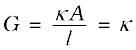

= (3.17)
= (3.17)It is necessary to define a few terms before we consider the subject of conductance of electricity through electrolytic solutions. The electrical resistance is represented by the symbol ‘R’ and it is measured in ohm (Ω) which in terms of SI base units is equal to (kg m2)/(S3 A2). It can be measured with the help of a Wheatstone bridge with which you are familiar from your study of physics. The electrical resistance of any object is directly proportional to its length, l, and inversely proportional to its area of cross section, A. That is,
R ∝ or R = ρ (3.17)
The constant of proportionality, ρ (Greek, rho), is called resistivity (specific resistance). Its SI units are ohm metre (Ω m) and quite often its submultiple, ohm centimetre (Ω cm) is also used. IUPAC recommends the use of the term resistivity over specific resistance and hence in the rest of the book we shall use the term resistivity. Physically, the resistivity for a substance is its resistance when it is one metre long and its area of cross section is one m2. It can be seen that:
1 Ω m = 100 Ω cm or 1 Ω cm = 0.01 Ω m
The inverse of resistance, R, is called conductance, G, and we have the relation:
G = = (3.18)
The SI unit of conductance is siemens, represented by the symbol ‘S’ and is equal to ohm–1 (also known as mho) or Ω–1. The inverse of resistivity, called conductivity (specific conductance) is represented by the symbol, κ (Greek, kappa). IUPAC has recommended the use of term conductivity over specific conductance and hence we shall use the term conductivity in the rest of the book. The SI units of conductivity are
S m–1 but quite often, κ is expressed in S cm–1. Conductivity of a material in S m–1 is its conductance when it is 1 m long and its area of cross section is 1 m2. It may be noted that 1 S cm–1 = 100 S m–1.
Table 3.2: The values of Conductivity of some Selected Materials at 298.15 K
| Material | Conductivity/S m–1 | Material |
Conductivity/S m–1 |
|
Conductors Sodium Copper Silver Gold Iron Graphite Insulators Glass Teflon |
2.1×103 5.9×103 6.2×103 4.5×103 1.0×103 1.2×10 1.0×10–16 1.0×10–18 |
Aqueous Solutions Pure water 0.1 M HCl 0.01M KCl 0.01M NaCl 0.1 M HAc 0.01M HAc Semiconductors CuO Si Ge |
3.5×10–5 3.91 0.14 0.12 0.047 0.016 1×10–7 1.5×1 |
It can be seen from Table 3.2 that the magnitude of conductivity varies a great deal and depends on the nature of the material. It also depends on the temperature and pressure at which the measurements are made. Materials are classified into conductors, insulators and semiconductors depending on the magnitude of their conductivity. Metals and their alloys have very large conductivity and are known as conductors. Certain non-metals like carbon-black, graphite and some organic polymers* are also electronically conducting. Substances like glass, ceramics, etc., having very low conductivity are known as insulators. Substances like silicon, doped silicon and gallium arsenide having conductivity between conductors and insulators are called semiconductors and are important electronic materials. Certain materials called superconductors by definition have zero resistivity or infinite conductivity. Earlier, only metals and their alloys at very low temperatures (0 to 15 K) were known to behave as superconductors, but nowadays a number of ceramic materials and mixed oxides are also known to show superconductivity at temperatures as high as 150 K.
Electrical conductance through metals is called metallic or electronic conductance and is due to the movement of electrons. The electronic conductance depends on
(i) the nature and structure of the metal
(ii) the number of valence electrons per atom
(iii) temperature (it decreases with increase of temperature).
As the electrons enter at one end and go out through the other end, the composition of the metallic conductor remains unchanged. The mechanism of conductance through semiconductors is more complex.
We already know (Class XI, Unit 7) that even very pure water has small amounts of hydrogen and hydroxyl ions (~10–7M) which lend it very low conductivity (3.5 × 10–5 S m–1). When electrolytes are dissolved in water, they furnish their own ions in the solution hence its conductivity also increases. The conductance of electricity by ions present in the solutions is called electrolytic or ionic conductance. The conductivity of electrolytic (ionic) solutions depends on:
(i) the nature of the electrolyte added
(ii) size of the ions produced and their solvation
(iii) the nature of the solvent and its viscosity
(iv) concentration of the electrolyte
(v) temperature (it increases with the increase of temperature).
Passage of direct current through ionic solution over a prolonged period can lead to change in its composition due to electrochemical reactions (Section 3.4.1).
We know that accurate measurement of an unknown resistance can be performed on a Wheatstone bridge. However, for measuring the resistance of an ionic solution we face two problems. Firstly, passing direct current (DC) changes the composition of the solution. Secondly, a solution cannot be connected to the bridge like a metallic wire or other solid conductor. The first difficulty is resolved by using an alternating current (AC) source of power. The second problem is solved by using a specially designed vessel called conductivity cell. It is available in several designs and two simple ones are shown in Fig. 3.4.
Basically it consists of two platinum electrodes coated with platinum black (finely divided metallic Pt is deposited on the electrodes electrochemically). These have area of cross section equal to ‘A’ and are separated by distance ‘l’. Therefore, solution confined between these electrodes is a column of length l and area of cross section A. The resistance of such a column of solution is then given by the equation:
R = ρ = (3.17)
The quantity l/A is called cell constant denoted by the symbol, G*. It depends on the distance between the electrodes and their area of cross-section and has the dimension of length–1 and can be calculated if we know l and A. Measurement of l and A is not only inconvenient but also unreliable. The cell constant is usually determined by measuring the resistance of the cell containing a solution whose conductivity is already known. For this purpose, we generally use KCl solutions whose conductivity is known accurately at various concentrations (Table 3.3) and at different temperatures. The cell constant, G*, is then given by the equation:
G* = = R κ (3.18)
Table 3.3: Conductivity and Molar conductivity of KCl solutions at 298.15K
Once the cell constant is determined, we can use it for measuring the resistance or conductivity of any solution. The set up for the measurement of the resistance is shown in Fig. 3.5.
It consists of two resistances R3 and R4, a variable resistance R1 and the conductivity cell having the unknown resistance R2. The Wheatstone bridge is fed by an oscillator O (a source of a.c. power in the audio frequency range 550 to 5000 cycles per second). P is a suitable detector (a headphone or other electronic device) and the bridge is balanced when no current passes through the detector. Under these conditions:
Unknown resistance R2 = (3.19)
These days, inexpensive conductivity meters are available which can directly read the conductance or resistance of the solution in the conductivity cell. Once the cell constant and the resistance of the solution in the cell is determined, the conductivity of the solution is given by the equation:
(3.20)
The conductivity of solutions of different electrolytes in the same solvent and at a given temperature differs due to charge and size of the ions in which they dissociate, the concentration of ions or ease with which the ions move under a potential gradient. It, therefore, becomes necessary to define a physically more meaningful quantity called molar conductivity denoted by the symbol Λm (Greek, lambda). It is related to the conductivity of the solution by the equation:
Molar conductivity = Λm = (3.21)
In the above equation, if κ is expressed in S m–1 and the concentration, c in mol m–3 then the units of Λm are in S m2 mol–1. It may be noted that:
1 mol m–3 = 1000(L/m3) × molarity (mol/L), and hence
Λm(S cm2 mol–1) =
If we use S cm–1 as the units for κ and mol cm–3, the units of concentration, then the units for Λm are S cm2 mol–1. It can be calculated by using the equation:
Λm(S cm2 mol–1) =
Both type of units are used in literature and are related to each other by the equations:
1 S m2mol–1 = 104 S cm2mol–1 or
1 S cm2mol–1 = 10–4 S m2mol–1.
Example 3.4
Resistance of a conductivity cell filled with 0.1 mol L–1 KCl solution is 100 Ω. If the resistance of the same cell when filled with 0.02 mol L–1 KCl solution is 520 Ω, calculate the conductivity and molar conductivity of 0.02 mol L–1 KCl solution. The conductivity of 0.1 mol L–1 KCl solution is 1.29 S/m.
Solution
The cell constant is given by the equation:
Cell constant = G* = conductivity × resistance
= 1.29 S/m × 100 Ω = 129 m–1 = 1.29 cm–1
Conductivity of 0.02 mol L–1 KCl solution = cell constant / resistance
= = = 0.248 S m–1
Concentration = 0.02 mol L–1
= 1000 × 0.02 mol m–3 = 20 mol m–3
Molar conductivity =
= = 124 × 10–4 S m2mol–1
Alternatively, κ = = 0.248 × 10–2 S cm–1
and Λm = κ × 1000 cm3 L–1 molarity–1
= 124 S cm2 mol–1
Example 3.5
The electrical resistance of a column of 0.05 mol L–1 NaOH solution of diameter 1 cm and length 50 cm is 5.55 × 103 ohm. Calculate its resistivity, conductivity and molar conductivity.
Solution
A = π r2 = 3.14 × 0.52 cm2 = 0.785 cm2 = 0.785 × 10–4 m2
l = 50 cm = 0.5 m
or = 87.135 Ω cm
Conductivity = = S cm–1
= 0.01148 S cm–1
Molar conductivity, = cm3 L–1
=
= 229.6 S cm2 mol–1
Both conductivity and molar conductivity change with the concentration of the electrolyte. Conductivity always decreases with decrease in concentration both, for weak and strong electrolytes. This can be explained by the fact that the number of ions per unit volume that carry the current in a solution decreases on dilution. The conductivity of a solution at any given concentration is the conductance of one unit volume of solution kept between two platinum electrodes with unit area of cross section and at a distance of unit length. This is clear from the equation:
 (both A and l are unity in their appropriate units in m or cm)
Molar conductivity of a solution at a given concentration is the conductance of the volume V of solution containing one mole of electrolyte kept between two electrodes with area of cross section A and distance of unit length. Therefore,
Since l = 1 and A = V ( volume containing 1 mole of electrolyte)
Λm = κ V (3.22)
Molar conductivity increases with decrease in concentration. This is because the total volume, V, of solution containing one mole of electrolyte also increases. It has been found that decrease in κ on dilution of a solution is more than compensated by increase in its volume. Physically, it means that at a given concentration, Λm can be defined as the conductance of the electrolytic solution kept between the electrodes of a conductivity cell at unit distance but having area of cross section large enough to accommodate sufficient volume of solution that contains one mole of the electrolyte. When concentration approaches zero, the molar conductivity is known as limiting molar conductivity and is represented by the symbol Λ°m. The variation in Λm with concentration is different (Fig. 3.6) for strong and weak electrolytes.
For strong electrolytes, Λm increases slowly with dilution and can be represented by the equation:
Λm = Λm ° – A c ½ (3.23)
It can be seen that if we plot (Fig. 3.12) Λm against c1/2, we obtain a straight line with intercept equal to Λm ° and slope equal to ‘–A’. The value of the constant ‘A’ for a given solvent and temperature depends on the type of electrolyte i.e., the charges on the cation and anion produced on the dissociation of the electrolyte in the solution. Thus, NaCl, CaCl2, MgSO4 are known as 1-1, 2-1 and 2-2 electrolytes respectively. All electrolytes of a particular type have the same value for ‘A’.
Example 3.6
The molar conductivity of KCl solutions at different concentrations at
298 K are given below:
c/mol L–1 Λm/S cm2 mol–1
0.000198 148.61
0.000309 148.29
0.000521 147.81
0.000989 147.09
Show that a plot between Λm and c1/2 is a straight line. Determine the values of Λm ° and A for KCl.
Solution
Taking the square root of concentration we obtain:
c1/2/(mol L–1 )1/2 Λm/S cm2mol–1
0.01407 148.61
0.01758 148.29
0.02283 147.81
0.03145 147.09
A plot of Λm( y-axis) and c1/2 (x-axis) is shown in (Fig. 3.7).
It can be seen that it is nearly a straight line. From the intercept
(c1/2 = 0), we find that
Λm °= 150.0 S cm2 mol–1 and
A = – slope = 87.46 S cm2 mol–1/(mol/L–1)1/2.
Kohlrausch examined values for a number of strong electrolytes and observed certain regularities. He noted that the difference in of the electrolytes NaX and KX for any X is nearly constant. For example at 298 K:
(KCl) – (NaCl)= (KBr) – (NaBr)
= (KI) – (NaI) Y 23.4 S cm2 mol–1
and similarly it was found that
(NaBr)– (NaCl)= (KBr) – (KCl) Y 1.8 S cm2 mol–1
On the basis of the above observations he enunciated Kohlrausch law of independent migration of ions. The law states that limiting molar conductivity of an electrolyte can be represented as the sum of the individual contributions of the anion and cation of the electrolyte. Thus, if λ°Na+ and λ°Cl– are limiting molar conductivity of the sodium and chloride ions respectively, then the limiting molar conductivity for sodium chloride is given by the equation:
(NaCl) = λ0Na+ + λ0Cl– (3.24)
In general, if an electrolyte on dissociation gives ν+ cations and ν– anions then its limiting molar conductivity is given by:
= ν+ λ0+ + ν– λ0– (3.25)
Here, and are the limiting molar conductivities of the cation and anion respectively. The values of λ0 for some cations and anions at 298 K are given in Table 3.4.
Table 3.4: Limiting Molar Conductivity for some Ions in Water at 298 K
Weak electrolytes like acetic acid have lower degree of dissociation at higher concentrations and hence for such electrolytes, the change in Λm with dilution is due to increase in the degree of dissociation and consequently the number of ions in total volume of solution that contains 1 mol of electrolyte. In such cases Λm increases steeply (Fig. 3.12) on dilution, especially near lower concentrations. Therefore, cannot be obtained by extrapolation of Λm to zero concentration. At infinite dilution (i.e., concentration c → zero) electrolyte dissociates completely (α =1), but at such low concentration the conductivity of the solution is so low that it cannot be measured accurately. Therefore, for weak electrolytes is obtained by using Kohlrausch law of independent migration of ions (Example 3.8). At any concentration c, if α is the degree of dissociation then it can be approximated to the ratio of molar conductivity Λm at the concentration c to limiting molar conductivity, . Thus we have:
(3.26)
But we know that for a weak electrolyte like acetic acid (Class XI, Unit 7),
(3.27)
Using Kohlrausch law of independent migration of ions, it is possible to calculate for any electrolyte from the λo of individual ions. Moreover, for weak electrolytes like acetic acid it is possible to determine the value of its dissociation constant once we know the and Λm at a given concentration c.
Example 3.7
Calculate for CaCl2 and MgSO4 from the data given in Table 3.4.
Solution
We know from Kohlrausch law that
= = 119.0 S cm2 mol–1 + 2(76.3) S cm2 mol–1
= (119.0 + 152.6) S cm2 mol–1
= 271.6 S cm2 mol–1
= = 106.0 S cm2 mol–1 + 160.0 S cm2 mol–1
= 266 S cm2 mol–1 .
Example 3.8
for NaCl, HCl and NaAc are 126.4, 425.9 and 91.0 S cm2 mol–1
respectively. Calculate Λo for HAc.
Solution
=
=
= (425.9 + 91.0 – 126.4 ) S cm2 mol–1
= 390.5 S cm2 mol–1 .
Example 3.9
The conductivity of 0.001028 mol L–1 acetic acid is 4.95 × 10–5 S cm–1.
Calculate its dissociation constant if for acetic acid is 390.5 S cm2 mol–1.
Solution
= = 48.15 S cm3 mol–1
α = = 0.1233
k = = 1.78 × 10–5 mol L–1
Intext Questions
3.7 Why does the conductivity of a solution decrease with dilution?
3.8 Suggest a way to determine the Λm ° value of water.
3.9 The molar conductivity of 0.025 mol L–1 methanoic acid is 46.1 S cm2 mol–1. Calculate its degree of dissociation and dissociation constant. Given λ0(H+) = 349.6 S cm2 mol–1 and λ0 (HCOO–) = 54.6 S cm2 mol–1.